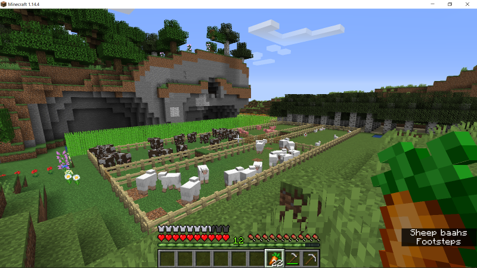

Quarry, Layer, Finish, Path, and Test Operations to Create Animal Farm
--:~ field.plot() <- Create Four Animal Pens with Central Access Alley -> muse/docs/fields/pens.md
--:+ Loaded by field.make with operation name, span of plots for the operation, and field bounds.
--:+ Supported operations are quarry, layer, finish, path, and test
--:+ Calls field.plot with specified plot span, field operation function, and total field plots for that operation.
--:+ Operation functions call field.plan with plot bounds, xyz offset, and prototype plan for the operation.
--:+ Leaves margins around finished area fencing, fences quadrants with internal alley, uses "fence" material.
--:+ Gates are to be placed by player (replacing fence) as desired.
package.path = _G.Muse.package
local cores = require("core"); local core = cores.core ---@module "signs.core"
local fields = require("field"); local field = fields.field ---@module "signs.field"
local vectorPairs = core.vectorPairs
local commands, bounds, faced = ... -- parameters from the lib/field call of the field function for this file
local bottom, top = bounds.bottom, bounds.top
local strides = {quarry = 1, layer = 1, finish = 1}
local nplots, slots, stride, run, striding, turn = field.extents(bounds, strides, faced)
local vW, vE, vN, vS = stride[1], stride[2], run[1], run[2] -- vN to vS run axis and vW to VE stride axis for each plot
local orient = function(xyzAB) return turn and core.orient(xyzAB) or xyzAB end -- no transform for west-east as stride
local runFences, minimumAlley, vWidth, vLength = 4, 3, vE - vW + 1, vS - vN + 1
local moreAlley = (vWidth - runFences - minimumAlley) % 2; local alleyWidth = minimumAlley + moreAlley
local penWidth = (vWidth - runFences - alleyWidth) / 2
if penWidth <= 0 then error("pens: Can't be "..penWidth.." blocks wide") end
local fences = (runFences vLength) + (2 penWidth) + (2 * (vWidth - 2))
core.status(2, "pens", slots.quarry, "slots each plot", fences, "fences")

The field is parcelled into plots appropriate to each field operation. Each plot is generated referencing the virtual stride and run axes. If there is no turn property, orient performs no transform. The stride axis is then simply west to east in game coordinates and operations will run along north to south game coordinates.
local divider = vN + core.round(vLength/2) -- half way along run
local startAlley = vW + penWidth + 2; local endAlley = startAlley + alleyWidth
local plots = {
quarry = vectorPairs(orient { {vW, top, vN - 1 }, {vW, bottom, vS + 1} }, striding.quarry, nplots.quarry + 2),
layer = vectorPairs(orient { {vW, bottom, vN}, {vW, bottom, vS} }, striding.layer, nplots.layer),
finish = {
orient { {vW, bottom, vN}, {vW, bottom, vS} }, -- along first stride (vW) to end of run (vN vS)
orient { {vW + 1, bottom, vS}, {vE - 1, bottom, vS} }, -- along end of run (vS) to last stride (vW vE)
orient { {vE, bottom, vS}, {vE, bottom, vN} }, -- along last stride (vE) to start of run (vS vN)
orient { {vE - 1, bottom, vN}, {vW + 1, bottom, vN} }, -- along start of run (vN) to first stride (vE vW)
orient { {vW + 1, bottom, divider}, {startAlley - 1, bottom, divider} }, -- along divider from start of run to alley
orient { {endAlley + 1, bottom, divider}, {vS - 1, bottom, divider } }, -- along divider from end of alley
orient { {endAlley, bottom, vS - 1 }, {endAlley, bottom, vN + 1} }, -- along alley end, from near end of run to near start
orient { {startAlley, bottom, vN + 1}, {startAlley, bottom, vS - 1} }, -- along start of alley back to near end
},
}; nplots.finish = #plots.finish; plots.path = plots.finish; nplots.path = nplots.finish
Each operation supported by this field (quarry, layer, finish, path, and test) corresponds to a field operation function. These call field.plan with the name of a plan prototype file in the plans directory and the fieldParameters including the plots that the plan prototype will need.
local function quarryOp(index)
local quarryResult = field.plan("quarry", {plots.quarry[index]}) -- from, to
core.status(2, "pens", "quarrying", index, quarryResult)
return quarryResult
end
local function layerOp(index)
local layerResult = field.plan("layer", {plots.layer[index], "dirt"})
core.status(2, "pens", "layering", index, layerResult)
return layerResult
end
local function finishPath(index, offset, plan)
local finishResult = field.plan(plan, {plots.finish[index], "fence"}, offset)
core.status(2, "pens", "finishingPath", index, finishResult)
return finishResult
end
local function finishOp(index, offset) return finishPath(index, offset, "layer") end
local function pathOp(index, offset) return finishPath(index, offset, "path") end
local function testOp() return "pens "..core.string(plots.finish) end
Call field.plot with a field operation callback as well as the number of plots and offsets for the operation.
local fieldOps = {layer = layerOp, quarry = quarryOp, finish = finishOp, path = pathOp, test = testOp};
local offsets = {finish = {0, 1, 0}, path = {0, 2, 0}}; local fieldOpName = commands[1]; local fieldsOp = fieldOps[fieldOpName]
if not fieldsOp then error("pens: doesn't "..fieldOpName) end
return field.plot(commands, fieldsOp, fieldOpName, nplots[fieldOpName], offsets[fieldOpName]) -- back to lib/field